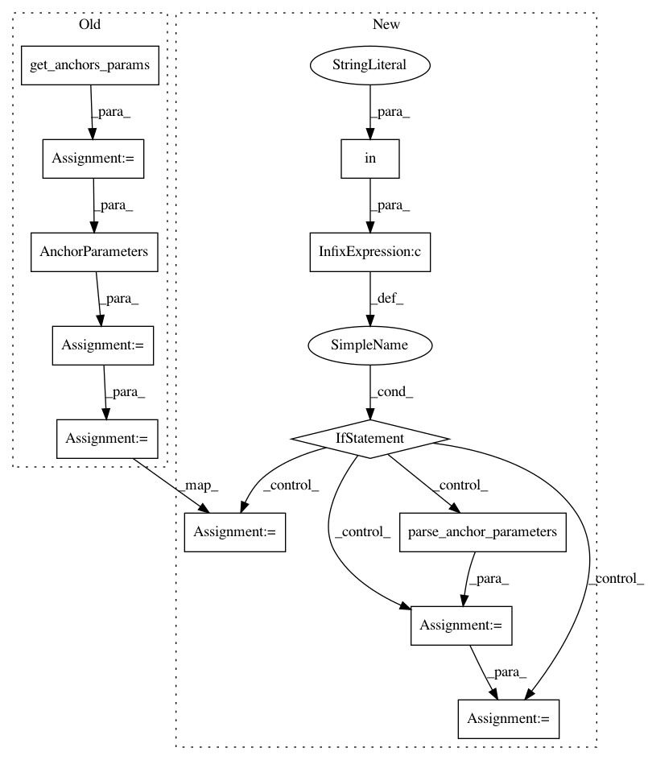

6d68dca2aec44c5b1a73e6c9db5c5fbf6f731fd0,keras_retinanet/bin/evaluate.py,,main,#Any#,130
Before Change
anchors_path = anchors_path if os.path.exists(anchors_path) else None
else:
anchors_path = args.anchors
anchors_dict = get_anchors_params(anchors_path)
anchors_params = AnchorParameters(**anchors_dict)
// create the generator
//(It"s ok not to update anchors args, as we only use the generator for load images and annotations.)
generator = create_generator(args)
// load the model
print("Loading model, this may take a second...")
model = models.load_model(args.model, backbone_name=args.backbone, convert=args.convert_model,anchor_parameters = anchors_params)
// print model summary
// print(model.summary())
After Change
// load the model
print("Loading model, this may take a second...")
if args.config and "anchor_parameters" in args.config:
anchor_params = parse_anchor_parameters(args.config)
model = models.load_model(args.model, backbone_name=args.backbone, convert=args.convert_model, anchor_params=anchor_params)
else:
model = models.load_model(args.model, backbone_name=args.backbone, convert=args.convert_model)
// print model summary
// print(model.summary())
// start evaluation
if args.dataset_type == "coco":
from ..utils.coco_eval import evaluate_coco
evaluate_coco(generator, model, args.score_threshold)
else:
In pattern: SUPERPATTERN
Frequency: 3
Non-data size: 12
Instances
Project Name: fizyr/keras-retinanet
Commit Name: 6d68dca2aec44c5b1a73e6c9db5c5fbf6f731fd0
Time: 2018-09-11
Author: e.liscio@fizyr.com
File Name: keras_retinanet/bin/evaluate.py
Class Name:
Method Name: main
Project Name: fizyr/keras-retinanet
Commit Name: 6d68dca2aec44c5b1a73e6c9db5c5fbf6f731fd0
Time: 2018-09-11
Author: e.liscio@fizyr.com
File Name: keras_retinanet/bin/train.py
Class Name:
Method Name: main
Project Name: fizyr/keras-retinanet
Commit Name: 6d68dca2aec44c5b1a73e6c9db5c5fbf6f731fd0
Time: 2018-09-11
Author: e.liscio@fizyr.com
File Name: keras_retinanet/bin/train.py
Class Name:
Method Name: create_models